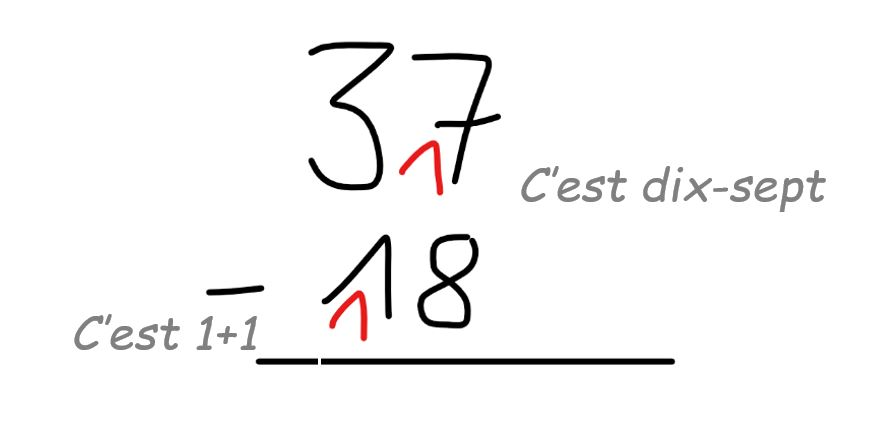

Définitions : Le résultat d’une soustraction s’appelle une différence et les nombres que l’on soustrait entre eux sont les termes de la différence.
Exemple :
Attention !
* Dans le calcul d’une somme l’ordre des termes n’a pas d’importance.
Par contre, dans une soustraction on ne peut pas changer l’ordre des termes.
* Pour poser une soustraction on doit aligner verticalement les chiffres des unités des deux termes de la différence.
Exemple:
* Dans le calcul d’une différence, lorsque l’on remplace les termes par des nombres plus simples mais très proches, le résultat obtenu que l’on obtient facilement par calcul mental, est appelé ordre de grandeur de la différence.
Exemple :
Recherchons un ordre de grandeur de 2 789,41 – 302,56.
2 789,41 est proche de 2 800
302,56 est proche de 300
Un ordre de grandeur de 2 789,41 – 302,56 est donc : 2 800 - 300 = 2 500.
La valeur exacte de 2 789,41 – 302,56 est : 2 789,41 – 302,56 = 2 486,85.
Calculer un ordre de grandeur d’une différence permet de prévoir ou de vérifier un résultat.